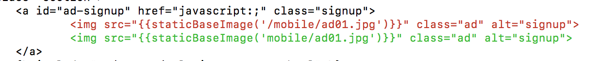
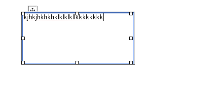
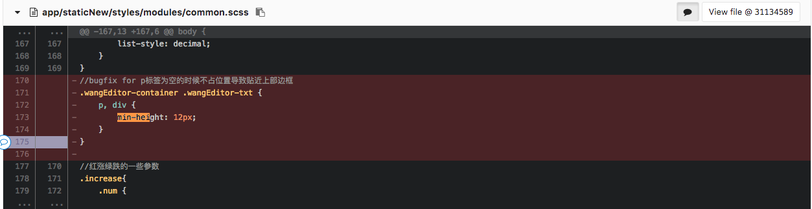

1、图片压扁的问题
事件经过
- 开始采用img 设置src方式
- 发现图片变形，采用 background-size: cover
- 图片大小是138 * 128， 自己没发现变形
重温background-size的属性
| 属性 | 解释 |
|---|---|
| length | percentage | 第一个值设置宽度，第二个值设置高度。 如果只设置一个值，则第二个值会被设置为 "auto"。 |
| cover | 把背景图像扩展至足够大，以使背景图像完全覆盖背景区域。 背景图像的某些部分也许无法显示在背景定位区域中。 |
| contain | 把图像图像扩展至最大尺寸，以使其宽度和高度完全适应内容区域。 |
试验一下
2、替换广告图片不生效
事件经过
- 考虑elves项目，采用替换图片方法
- 打包构建项目，本地测试OK（浏览器）
- 线上测试，浏览器OK
- pm告知微信中尚未变化
- 莫非是微信缓存了整个html?
翻看代码
}})
一时间竟没发现问题!
打开网页看调试工具

原来是没写成CDN的路径!！

个人总结
- 小的修改也往往更需要细心
- 上线验证,页面OK，代码层面也需验证
- 发现问题，从自己身上找问题
- 注意命名，图片最好不要ad打头，容易被block
3、IE下的编辑器手柄
事件经过
- 某次"优(fix)化(bug)"编辑器功能😋
- 之后琪总反馈IE下有问题😅
- 纳尼😱？JS没改过啊!
- 于是自己写一个干净的页面，未发现问题，IE说这锅我不背!😇
- 这货看着像编辑手柄，快谷歌一下咋回事🤔
- 终于发现是这个问题！😊
查看代码修复代码
个人总结
- 兼容IE需要回归
- IE坑多，那也得解决